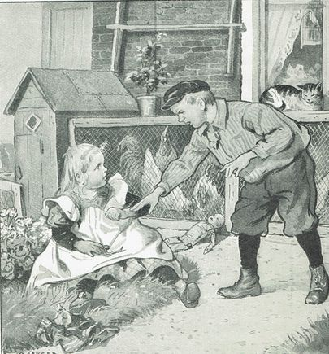
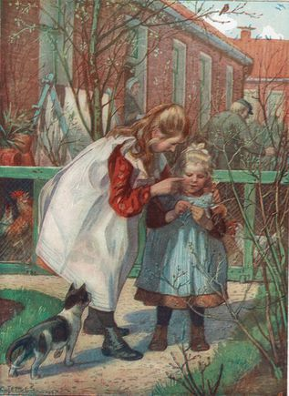
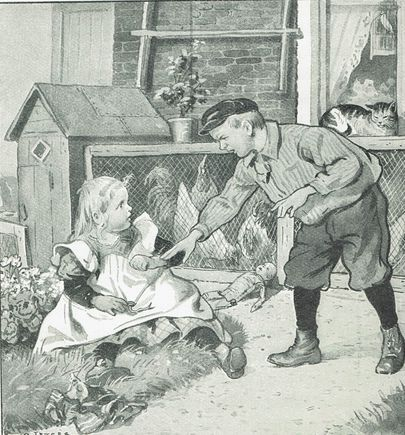
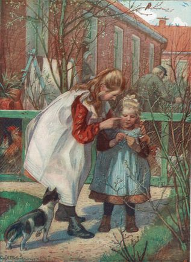
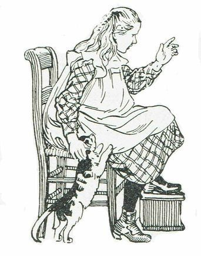
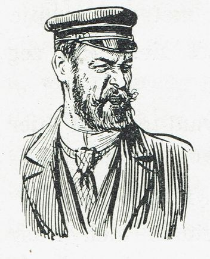
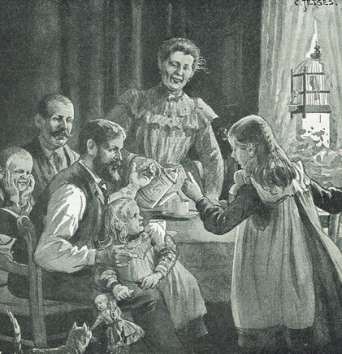

Jan Ligthart: de regenworm
Jan Ligthart: de regenworm
### de regenworm
Jan LIgthart schreef in het begin van de vorige eeuw een verhaal waardoor kinderen konden leren lezen en ook leerden wat een regenworm was. De stijl is even wennen. Het is een leuk en leerzaam verhaal.
De regenworm, een nieuwe vriend van Tuttie
Tuttie was op de grasrand van een bloemperkje gaan zitten. Dat hinderde niet want het gras was droog. En nu kroop er, vlak bij haar, een worm uit de zwarte grond. Dat vond ze een leuk gezicht. En net toevallig zong ze:
“Kom er maar uit tedere puit” -1920w.jpg) De tedere puit kwam er uit en kronkelde een eindje over de grond. Toen wou hij er weer in kruipen. Hij boorde tenminste zijn spitse kop al tussen de zwarte aarde. Maar dat vond Tuttie niet zo’n leuk gezicht. De worm moest nog een beetje bij haar blijven. En daarom pakte ze hem beet, en legde hem vlak voor zich. Jawel hij ging weer weg. Nu legde Tuttie hem in haar schortje. En ze dacht dat de worm het daar wel erg prettig zou vinden. Haar broer Willem ging eens kijken wat Tuttie uitvoerde. “O Tuttie, een worm! Doe weg!” riep hij toen hij het dier zag. Maar daar had Tuttie geen plezier in. Wegdoen? Ze wou juist nog een beetje met hem spelen. “ ’t Is een vies dier,” zei Willem nu. “Daar mag je niet mee spelen.” ” Vies? Niemendal vies. ’t Was een heel mooi diertje. En die paar korreltjes aarde aan zijn lichaam had Tuttie er al afgeveegd. “Hij wil naar zijn huisje, hij wil naar zijn kindertjes. Toe Tuttie! Daar is een gangetje, en daar kruipt hij in, en dan komt hij hij zijn kindertjes.” Neen hoor, ’t gaf niets. Dan moesten die kindertjes maar hier komen. Die worm was nu Tuttie’s vrind, en hij bleef nog een poosje bij haar. Willem wist niet, wat hij doen moest. En daarom ging hij naar binnen, om Moeder te waarschuwen. “Toe Dina, ga eens kijken,” zei Moeder. “En laat Tuttie anders eens even bij me komen.”Dina ging. Zij vond het niet zo erg als Willem. Die worm zou haar niet opeten. Maar Moeder moest het weten. En daarom zei Dina, dat Tuttie even naar Moeder moest gaan. Tuttie nam haar nieuwe lieveling mee. En met de kronkelende worm in haar schortje kwam ze bij Moeder. Moeder gaf Willem gelijk. Dat was geen speelgoed voor kleine Tuttie. En daarom moest ze de worm dadelijk in de tuin gooien. Tuttie begon erbarmelijk te huilen. Maar dat hielp niet. De aardbewoner moest naar de aarde terug. ’s Avonds, toen Tuttie al naar bed was, vertelde Moeder aan Vader, dat zijn jongste dochter vandaag een nieuwe speelkameraad had gehad. “En wat was dat voor een kameraad?” “Een worm! Die had ze voor de verandering maar eens in haar schortje gehouden. ”En ik zei, dat ze de worm naar zijn huis moest laten gaan,” vertelde Willem. ,,Maar ze wou niet.”“Naar zijn huis?” vroeg Dina nu. “Heeft een worm dan een huis?” Dat wist Willem niet. Hij had het maar zo gedacht. Maar Moeder wist het ook niet. En Vader ook niet.Hoe leeft die worm daar eigenlijk onder de grond? Niemand wist het. Wat eet hij? Aarde, dacht Dina. Maar niemand wist het. Hoe diep zit hij in de grond? Waar blijft hij ’s winters, als de grond hard bevroren is? Maakt hij een nestje? Legt het vrouwtje ook eieren? Kan hij zien? Niemand wist het. “Wil ik het eens aan mijn meester vragen?” zei Dina. “Die weet haast alles.” Dat was een goed idee. En Dina vergat het niet. Zodra ze op school kwam, vroeg ze er de meester naar. En toen ze thuis weer gezellig bij elkaar zaten, en Vader vroeg: “Wel, wat zei de meester?” toen antwoordde Dina: “De meester wist het ook niet.” 
De tedere puit kwam er uit en kronkelde een eindje over de grond. Toen wou hij er weer in kruipen. Hij boorde tenminste zijn spitse kop al tussen de zwarte aarde. Maar dat vond Tuttie niet zo’n leuk gezicht. De worm moest nog een beetje bij haar blijven. En daarom pakte ze hem beet, en legde hem vlak voor zich. Jawel hij ging weer weg. Nu legde Tuttie hem in haar schortje. En ze dacht dat de worm het daar wel erg prettig zou vinden. Haar broer Willem ging eens kijken wat Tuttie uitvoerde. “O Tuttie, een worm! Doe weg!” riep hij toen hij het dier zag. Maar daar had Tuttie geen plezier in. Wegdoen? Ze wou juist nog een beetje met hem spelen. “ ’t Is een vies dier,” zei Willem nu. “Daar mag je niet mee spelen.” ” Vies? Niemendal vies. ’t Was een heel mooi diertje. En die paar korreltjes aarde aan zijn lichaam had Tuttie er al afgeveegd. “Hij wil naar zijn huisje, hij wil naar zijn kindertjes. Toe Tuttie! Daar is een gangetje, en daar kruipt hij in, en dan komt hij hij zijn kindertjes.” Neen hoor, ’t gaf niets. Dan moesten die kindertjes maar hier komen. Die worm was nu Tuttie’s vrind, en hij bleef nog een poosje bij haar. Willem wist niet, wat hij doen moest. En daarom ging hij naar binnen, om Moeder te waarschuwen. “Toe Dina, ga eens kijken,” zei Moeder. “En laat Tuttie anders eens even bij me komen.”Dina ging. Zij vond het niet zo erg als Willem. Die worm zou haar niet opeten. Maar Moeder moest het weten. En daarom zei Dina, dat Tuttie even naar Moeder moest gaan. Tuttie nam haar nieuwe lieveling mee. En met de kronkelende worm in haar schortje kwam ze bij Moeder. Moeder gaf Willem gelijk. Dat was geen speelgoed voor kleine Tuttie. En daarom moest ze de worm dadelijk in de tuin gooien. Tuttie begon erbarmelijk te huilen. Maar dat hielp niet. De aardbewoner moest naar de aarde terug. ’s Avonds, toen Tuttie al naar bed was, vertelde Moeder aan Vader, dat zijn jongste dochter vandaag een nieuwe speelkameraad had gehad. “En wat was dat voor een kameraad?” “Een worm! Die had ze voor de verandering maar eens in haar schortje gehouden. ”En ik zei, dat ze de worm naar zijn huis moest laten gaan,” vertelde Willem. ,,Maar ze wou niet.”“Naar zijn huis?” vroeg Dina nu. “Heeft een worm dan een huis?” Dat wist Willem niet. Hij had het maar zo gedacht. Maar Moeder wist het ook niet. En Vader ook niet.Hoe leeft die worm daar eigenlijk onder de grond? Niemand wist het. Wat eet hij? Aarde, dacht Dina. Maar niemand wist het. Hoe diep zit hij in de grond? Waar blijft hij ’s winters, als de grond hard bevroren is? Maakt hij een nestje? Legt het vrouwtje ook eieren? Kan hij zien? Niemand wist het. “Wil ik het eens aan mijn meester vragen?” zei Dina. “Die weet haast alles.” Dat was een goed idee. En Dina vergat het niet. Zodra ze op school kwam, vroeg ze er de meester naar. En toen ze thuis weer gezellig bij elkaar zaten, en Vader vroeg: “Wel, wat zei de meester?” toen antwoordde Dina: “De meester wist het ook niet.” 
EEN VERBORGEN LEVEN
Dat wormpje kroop maar welgemoed
De donkre bodem in;
Zo’n leven in de zwarte grond
Was nu juist naar zijn zin.
Maar kon het dan in duister zien?
Hoe vond het daar zijn eten?
En als het naar zijn huisje wou,
Hoe kon ’t de weg dan weten?
Of had het helemaal geen huis,
Noch boven noch beneden?
En was zijn vrouw en ’t kleine volk
Ook zonder huis tevreden?
Of had het wormpje vrouw noch kind?
En waarvan moest het leven?
Toch zeker niet van zwarte grond:
Kon die wel voedsel geven?
Het wormpje zegt geen enkel woord
Op ons weetgierig vragen;
En stopt zijn leven weg in de aard,
Alsof ’t ons wilde plagen.
NU WETEN WE HET  “Nu weet ik het,” zei Dina een paar dagen later. “Wat weet je?” vroeg Vader. “Van de wormen. Een heleboel! De meester heeft er van verteld.” “En de meester wist er niets van?” “Ja, maar hij heeft het opgezocht in een dik boek.” “En heeft hij dan ook verteld, of de wormen zien konden?” “Ja, ze kunnen niet zien, want ze hebben geen ogen.” “En hoe weten ze de weg dan?” “Misschien op het gevoel. Maar dat wist de meester niet. Aan ogen zouden ze onder de grond ook niets hebben. ’t Is daar immers toch donker?” “En wat eet een worm dan?” “Toch het meest zwarte aarde. Maar weet u, in die zwarte aarde is een stof en die heet humus. En dat is eigenlijk gekomen van verrotte bladeren. En daar haalt hij zijn eten uit.” “Dus eigenlijk eet hij verrotte bladeren?” “Ja, dan stopt hij zijn hele lijf vol aarde.” “Hoe doet hij dat dan?” “Door zijn mond natuurlijk. Want hij heeft wel een mond. En door zijn hele lijf loopt een wijd darmkanaal. Dat eet hij dan helemaal vol. En wat hij niet verteert, dat werpt hij aan de andere kant van zijn lijf weer uit. Hebt u wel eens van die kleine hoopjes zwarte grond gezien? Die heeft een worm uitgeworpen. Want die wil hij niet in zijn gangen hebben. En daarom gaat hij naar boven en werpt ze daar op de grond uit.” “Dat is nogal netjes van zo’n beest,” vond Moeder. Maar Vader zei: “Netjes? In zijn eigen gang wil hij ’t niet hebben, en daarom gooit hij ’t maar in onze tuin.” “Ja maar Vader,” zei Dina “hij weet natuurlijk niet, dat het onze tuin is.” “Daar heb je weer gelijk aan. En wat wist de meester nu nog meer? Of is ’t al uit?” O neen, er komt nog een boel meer. Maar daar kan ik zoo ineens niet op komen. 0 ja, hoe lang denkt u, dat zo’n gang wel is?” “Zo lang als een potlood.” “Neen, langer.” “Dan zo lang als de poot van een stoel.” “Nog langer. Ze zijn soms wel twee meter. Dat zijn de langste.” “Hoe lang is dat dan?” vroeg Willem. “Dat is zo wat zo lang als die deur,” zei Vader. “Dan gaan ze toch diep, hoor!” “Ja Moeder, en die gangen lopen meestal recht naar beneden. En als het dan winter is, kruipen ze helemaal naar omlaag, en daar hebben ze een heel klein kamertje. Daar rollen ze zich in elkaar, en dan is het kamertje net vol. En daar blijven ze de hele winter liggen.”Maar waarom kruipen ze soms boven de grond?“ “O Moeder, ze eten ook nog wel wat anders. Dorre blaadjes en groene blaadjes halen ze in hun gang. Weet u, wat ze graag lusten? Bladeren van kool en van uien. En ook stukjes vlees eten ze op. Als ze een dooie tor vinden of een vlieg, dan trekken ze die ook naar binnen. Maar ze eten van dat alles alleen, als het aan het rotten is. En als het nu nog niet rot, bijvoorbeeld een vers blaadje of een stukje vlees, dan laten ze het eerst rotten. En daarvoor doen ze er een zuurachtig vocht over, dat uit hun lichaam komt.” “Dus ze eten ook vlees?” “O ja. Als u ’s avonds een paar stukjes vlees bij een gang legt, dan zijn die ’s morgens weg. Dan heeft de worm ze in zijn gang gesleept En nu weet ik ineens nog wat.”Vertel op dan.”Als een worm in zijn gang zit, wil hij daar natuurlijk graag veilig zijn. En daarom stopt hij de ingang toe. Dan haalt hij ’s nachts veertjes en takjes en stukjes stro en blaadjes bij zijn gang, en die trekt hij daar in. En als je dan ’s morgens komt kijken, steekt dat propje er nog een beetje uit.” “Dat moeten we eens gaan zien,” zei Vader.
“Ja, maar u moet in de herfst gaan kijken, want dan gaan ze immers naar beneden, om de hele winter in hun kamertje te blijven?” “Goed, help het maar onthouden, dan zullen wij in ’t najaar eens zien, of we zo’n gang met een propje gesloten vinden. Maar als we dat niet zien, dan zeg ik, dat je meester gejokt heeft.
”En dat mag u toch niet zeggen, want er zijn hier misschien weinig wormen.” Zijn er dan niet overal evenveel?” vroeg Willem. “O neen, in het zand zijn ze helemaal niet. Daar hebben ze niets te eten. Er moet veel humus in de grond zitten. En weet u, wanneer ze veel boven komen? Als het dikwijls regent. En als het lange tijd droog is, kruipen ze naar de diepte. Maar er is nog wel een middeltje, om ze naar boven te jagen. Dan moet je een dikke stok in de grond steken, en daarmee schudden. Dan denken ze, dat er een mol aankomt, om ze op te eten, en dan kruipen ze gauw naar boven en naar buiten.” “Maar kind!” zei Moeder. “Wat heb je dat alles toch goed onthouden! Die meid heeft een geheugen als een ijzeren pot. Jij moet maar schooljuffrouw worden.”
MAAR OOM JAN WEET ER NIETS VAN  Net toen Dina verder wou vertellen, werd er gescheld. En daar was Oom Jan. “Goeie avond samen! Wat zit jullie hier gezellig!” “Ja,” zei Moeder, “Dina speelt voor schooljuffrouw. En wij moeten van haar leren.” “En wat leert ze jullie dan wel?” “O, ze leert ons allemaal van de wormen.” “Van de wormen?” riep Oom Jan, en hij kneep zijn ogen dicht. “Van de wormen? Bah! Wat moet jelui nu van dat vieze gedierte weten!” ’t Was komiek, om te zien, wat een vies gezicht Oom Jan zette. En hij bromde nog eens: “Van de wormen! Wel foei! Die moet je vangen, als je uit vissen gaat. Van die dikke dauwwormen. Die komen ’s avonds boven de grond. En dan ga je ze zoeken met een lantaarntje. Maar daar ga je toch niet van léren! Of leren ze die dingen tegenwoordig. ook al op school? Ze leren tegenwoordig allemaal van die gekke dingen. Wel foei, van de wormen! Laat die maar stilletjes in de grond blijven. Behalve als je uit vissen gaat. Dan roep je ze maar naar boven toe. Weet je wel, hoe je dat doen moet? Nu heb je zoveel van die wormen geleerd; en dat weet je misschien niet eens.” “Jawel Oom,” zei Dina, toen Oom Jan uitgebromd had, “dan zet je een stok in de grond en daar schud je. mee. Maar weet u wel, wat de wormen eten?” 
“O kind, ik weet er al lang. alles van. Vraag maar toe, dan zal ik wel alles zeggen.” “Nu Oom, wat eten ze dan.?” “Alles wat ze doorslikken.” Ja, dat spreekt. Maar wat is dat dan?“ “Hun voedsel.” “Op die manier kan iedereen wel alles weten. Maar zeg u dan eens, waar de wormen ’s winters blijven” “In hun vel” Vader, Moeder en Willem zaten maar te lachen. Dina echter niet. Oom Jan maakte er allemaal gekheid mee. En zij meende het in ernst. “Nu zal ik u nog één ding vragen,” zei ze, ,,en als u dat ook niet weet, dan schei ik er uit.” “Wat zeg je, meid? Als ik dat ook niet weet? Dat andere heb ik toch allemaal geweten? Vraag dat maar aan je vader en moeder.” “Niks van aan! Niks van aan! U hebt niks geweten. En wat ik u nu vraag, weet u ook niet.” “Weet ik ook wel,” zei Oom. ,,Vraag maar op.” “Hoe diep is de gang van een worm wel?” vroeg Dina nu.“Net zoo. diep, als hij lang is.” “Ja maar, hoe diep is dat dan?” Dat zeg ik immers: net zo diep, als hij lang is.” “En hoe lang is hij dan?” “Net zo lang, als hij diep is.” “lk schei er uit, hoor!” zei Dina. “U weet er niks, niks van. Vertel u maar eens liever van een tijger of van dat andere beest, hoe heet het ook weer.” “Een korkedil!” riep Willem. “Neen, zo was het niet. Wel zo iets.” “Meen je een krokodil?” vroeg Oom. “Ja, ja, een krokodil.” “Nu maar daar weet ik ook niets van. Jij bent toch zo’n knappe schooljuffrouw, vertel jij het maar.”“Vertel eerst nu eens,” zei Moeder, ”wat je ons nog van de wormen vertellen wou.” “Dat wil ik wel doen,” zei Dina, als die akelige Oom Jan weg is.” “Goed, goed, ik ga weg,”. en Oom stond al op en greep naar zijn pet. Maar zo had Dina het niet bedoeld. Ze hield veel te veel van Oom. En dat hij zo’n pret maakte, dat vond ze juist aardig. “Neen, neen, blijf u maar asjeblieft!” Toen ging Oom weer zitten. “ ”En wat weet je nu nog van je wormen?“ “Dat ze niet in een bloempot mogen zitten.” “Dat weet ik ook wel, zei Oom. “En waarom dan niet?” “Omdat ze de wortels opvreten. “Mis, mis, mis, mis, mis!” “Nu, zeg jij het dan eens.” “Omdat ze de aarde zuur maken.” “De aarde zuur? Hebben ze dan azijn in hun buik?” “Neen, neen! Maar ze geven wel een zuur vocht af. En daardoor kunnen de planten verrotten.” “Wel, wel, dat wist ik nu toch oprecht niet. Maar wat zal dat dan treurig zijn in de weilanden en op de akkers.” “Neen Oom, daar zijn de wormen juist nuttig. Daar werken ze de grond om. Want eerst vullen ze hun hele lijf met aarde, en dan werpen ze die aarde boven weer uit. Dus dat is net zoo goed als ploegen.”“Die paar wormen? Kunnen die de hele grond omploegen?” “Een paar? De meester heeft gezegd, dat er heel, héél veel zijn.” “Heeft de meester ze dan geteld?” “Neen, natuurlijk niet. Maar hij heeft het gelezen.” “Zo, zo,” zei Oom, “dus zijn die wormen alleen maar in een bloempot schadelijk? Goed, dat ik het weet. Als ik weer eens ga vissen, zal ik de wormen alleen in je moeders bloempotten zoeken.”
Tekst uit: Blond en bruin, Jan Lighthart en H. Scheepstra. Derde Stukje 16e druk. L.B. Wolters Groningen – Den Haag – Batavia, 1931.
Tekeningen: C. Jetses